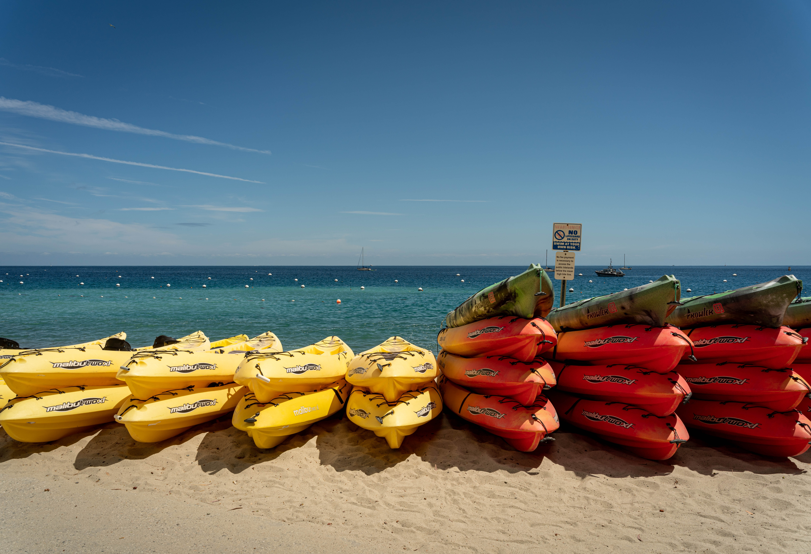

Recreational Kayaks!
A recreation Kayak is a conoe like water craft that has a larger cockpit to sit down inside of. These Kayaks have a low difficulty both entering and exiting the shore line. Here are some basic points on recreation Kayaks!
- Low difficulty rating
- Highly manuaverable
- Easy to use
- Stable
- Heavier